Seminar series · Digital History in/of Central Asia · FAU Erlangen-Nürnberg · 29 June 2026
Islam's “Peripheries”
Digital humanities, algorithmic analysis, and AI in West Africa and Central Asia.
Aksana Ismailbekova
Leibniz-Zentrum Moderner Orient (ZMO)
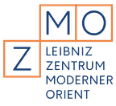
Frédérick Madore
Africa Multiple Cluster of Excellence · University of Bayreuth
Thank you for the invitation. Our two regions — West Africa and Central Asia — rarely share a seminar room, let alone a research project. Today we want to explain why we think they belong together, and how AI-assisted digital methods let two locked-up archives speak to each other for the first time. We'll move from the conceptual claim, through the archives and the problem they pose, to the three things we're building — and the risks we're managing as we go.
Funding · Volkswagen Foundation
An “Open Up” research project
A collaboration funded by the Volkswagen Foundation , under its Open Up — New Research Spaces for the Humanities and Cultural Studies programme.
The programme's wager
To “open up” is to take the first step into something new and unknown — the call backs small teams to explore entirely new research spaces , complex topics that need more than one perspective.
Start Autumn 2026
Duration 18 months
Team Two researchers · two regions
Before the argument, a word on where this comes from. The project is funded by the Volkswagen Foundation, under a programme called Open Up — New Research Spaces for the Humanities and Cultural Studies. The name is the point. The foundation is explicitly looking for projects that open genuinely new ground, rather than adding one more angle to a familiar subject, and it funds small teams of two or three researchers so that different kinds of expertise can work a complex problem together. That's exactly what we are: two scholars, two regions that rarely share a seminar room. We start in the autumn of 2026 and run for eighteen months. It's a deliberately exploratory brief, with the higher risk that comes with that — which is why, later on, we'll be candid about the risks we're taking on rather than hiding them.
The conceptual stake
Why “peripheries”?
In Islamic studies, sub-Saharan Africa and Central Asia are often treated as marginal
Distant from the “real” Islam of the Middle East
Yet Muslim delegations from Togo and Dahomey (Benin) visited Soviet Central Asia, 1960s–70s — and vice versa
The project challenges the centre–periphery frame itself
Start with the word in the title, in quotation marks. In Islamic studies, both of our regions are framed as edges — sub-Saharan Africa and Central Asia, far from the Arab heartland, doing a supposedly derivative version of the faith. The framing is old and it is wrong. These clippings from the West African press — Togo-Presse and Daho-Express, between 1963 and 1972 — report Muslim delegations travelling between Togo, Dahomey, and the Soviet Central Asian republics. The traffic went both ways. So the periphery was never isolated; it was networked. Our project takes that as its starting point: not to add two more cases to the margin, but to question the centre against which they were ever called marginal.
In the news · April 2026
Togo ↔ Kyrgyzstan, 2026
A different kind of tie in the present day. In April 2026, Togo's president made the first-ever state visit to Kyrgyzstan — diplomacy and trade now, where the 1960s links were religious.
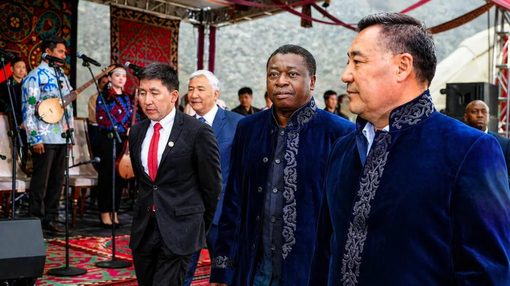
République Togolaise
Faure Gnassingbé à Bichkek
First Togolese leader to visit Kyrgyzstan · 29 April 2026 · republicoftogo.com ↗
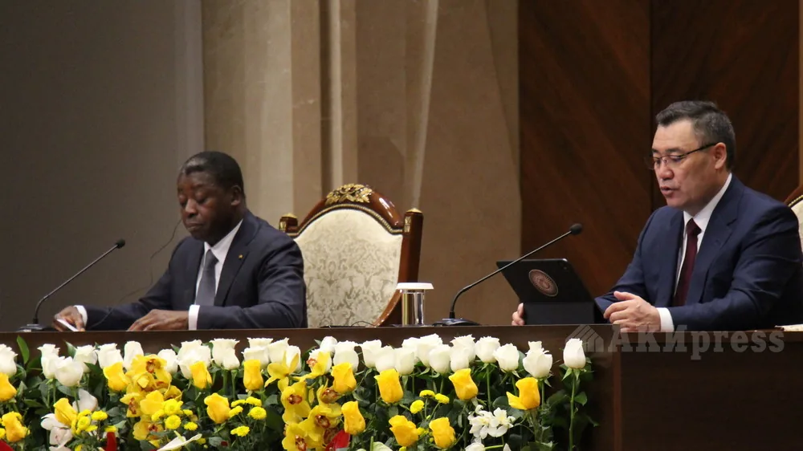
AKIpress · Bishkek
Kyrgyzstan and Togo sign accords
Education, trade, health, digitalisation · 29 Apr 2026 · akipress.org ↗
A quick jump to the present, to show the pairing of these two regions isn't only a historical curiosity. In April 2026, Faure Gnassingbé became the first Togolese head of state ever to visit Kyrgyzstan. This is a different kind of contact from the clippings we just saw. Those were Muslim delegations; this is state diplomacy. On the left, the Togolese presidency's own photographs of the visit; on the right, the Kyrgyz agency AKIpress, reporting the agreements the two countries signed on education, trade, health, and digitalisation. The religious networks of the sixties and a diplomatic visit today are very different things. But both make one simple point for us: West Africa and Central Asia are not two sealed-off worlds, and bringing their archives into a single project is less far-fetched than it might first sound.
01
The challenge
Vast multilingual archives, studied in silos.
Before the methods, the material. Two problems stand in the way of the comparison we just described: the sheer scale and language spread of the sources, and a scholarly habit of keeping the two regions apart.
The problem
Vast archives, locked away
~16,000 documents
12+ languages
Partial cataloguing
Russian Arabic Hausa
Ewe Kabyè Tajik
French Uzbek Persian
Turki German English
Why it stays locked
Sheer volume and linguistic diversity defeat traditional analysis
No single scholar or team reads every language and script
Rich historical insight stays out of researchers' reach
Here is the scale. Across the two collections, roughly sixteen thousand documents, in more than ten languages — Russian, Arabic, Hausa, Ewe, Kabyè, Tajik, French, Uzbek, Persian, Turki, German, English. Several scripts, several alphabets. Only part of it is catalogued. No single scholar reads all of these languages, and even a team can't manually work through this volume across this many tongues. So the material exists, it is preserved, but it is effectively closed: the insight inside it is unreachable with the methods we usually bring to an archive. That gap between what is held and what is usable is the practical problem the project sets out to solve.
Rarely compared
Studied in silos
West Africa · post-1960s
Islamic discourse and public engagement
Post-colonial nation-building
Western-educated Muslim voices
Francophone press and audiovisual sources
Central Asia · Soviet era + Tajik civil war
Russian imperial administration records
Early Soviet governance of Muslim communities
Islamic reformers and local agency
Rare Emirate of Bukhara materials
Common comparative ground
Secularism
Modernity
Development
Islamic reformism
The second obstacle is scholarly, not technical. These two fields almost never talk. West African Islam, since the 1960s, is studied through public debate, the post-colonial nation, a Western-educated Muslim elite, and a rich francophone press. Central Asian Islam is studied through imperial Russian and early Soviet governance, local reformers, the rare materials of the Emirate of Bukhara. Different archives, different languages, different historiographies — so the obvious comparative questions never get asked. But look at the band along the bottom: the same big concepts run through both stories. Secularism — French laïcité in West Africa, Soviet atheism in Central Asia, and in both, Muslims defining themselves against a secular state. Modernity and development — rival colonial, Soviet, and post-colonial projects that Muslims had to live inside. And Islamic reformism — the Jadids in Central Asia, reformist currents in West Africa, each arguing over what a correct, modern Islam should be. These are the same questions, asked in two rooms that never compare notes. Putting the sources on common ground is what would finally let us ask them together — which is exactly what the methods in the next section are for.
Both held at ZMO
Two multilingual digital collections
Islam West Africa Collection
14,500+ items — newspapers, Islamic publications, audiovisual recordings, photographs9,315 minutes of audio in Hausa6 countries, since the 1960s
Reinhard Eisener
1,619 documents across 50 archival boxesBukhara (1917–30), Soviet governance, Tajik civil war (1992–97)
8 languages incl. Turki; multiple scripts
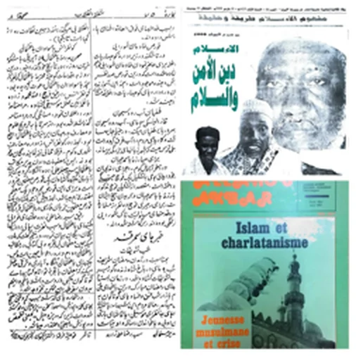
Samples from both collections.
Concretely, two collections, both held at the Leibniz-Zentrum Moderner Orient in Berlin. The first is the Islam West Africa Collection, IWAC, which Frédérick has built since 2023: over fourteen thousand five hundred items — newspapers, Islamic publications, photographs — plus more than nine thousand minutes of audio in Hausa, drawn from six countries since the 1960s, and open access. The second is the Reinhard Eisener Collection: sixteen hundred documents across fifty archival boxes, the estate of a single scholar, covering the Emirate of Bukhara, early Soviet governance, and the Tajik civil war of the nineties — eight languages, including Turki, and several scripts. The montage on the right pulls together a few samples from both: handwritten manuscripts, an Arabic-script newspaper, printed francophone pamphlets. Two very different objects. The wager of the project is that the same set of methods can open both.
Open access · islam.zmo.de
The Islam West Africa Collection
islam.zmo.de/s/westafrica
Open ↗
And here's the West African side, live. This is the public home of the Islam West Africa Collection, and it's open access: anyone can browse the newspapers, the Islamic publications, the photographs, and the Hausa audio right now, without an account. That's what "open" means for us in practice — the collection isn't a promise, it's already on the web for researchers, students, and the public to use. Keep that in mind, because the Central Asian side isn't there yet.
A scholar's estate · access on request
The Reinhard Eisener Collection
zmo.de/en/library · Reinhard Eisener Bestand
Open ↗
The Central Asian side is at an earlier stage. What you're looking at isn't the collection itself, but the ZMO library's page describing it — the institutional record of the Reinhard Eisener estate: roughly sixteen hundred documents in fifty boxes, from the Emirate of Bukhara to the Tajik civil war. Unlike the West African collection, almost none of it is digitised or searchable online yet. Closing that gap is the work: scanning this estate, structuring it, and making it as open as IWAC. That's where the methods come in.
Fieldwork · Osh, Kyrgyzstan
A possible third collection
Aksana Ismailbekova has been at Osh State University, in southern Kyrgyzstan.
The university holds a large collection of Islamic materials
Gathered from local people across the region
Manuscripts, devotional prints, loose-leaf texts
A possibility we'd explore
Scanning these holdings and incorporating them — a third collection, alongside IWAC and the Eisener archive.
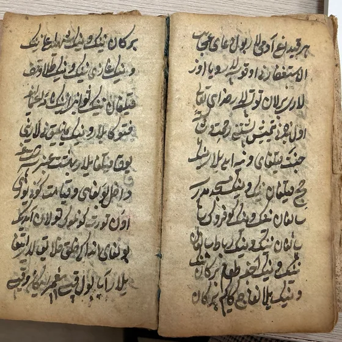
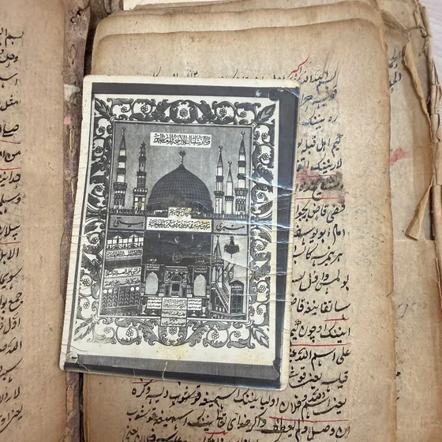
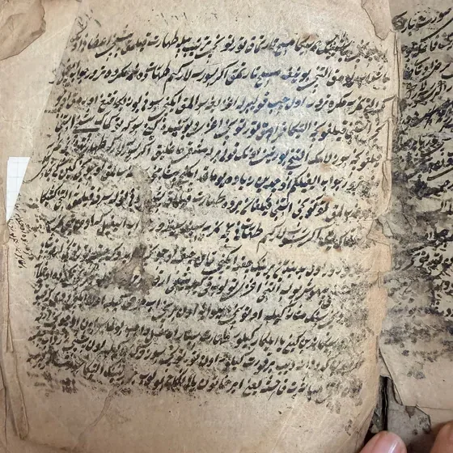
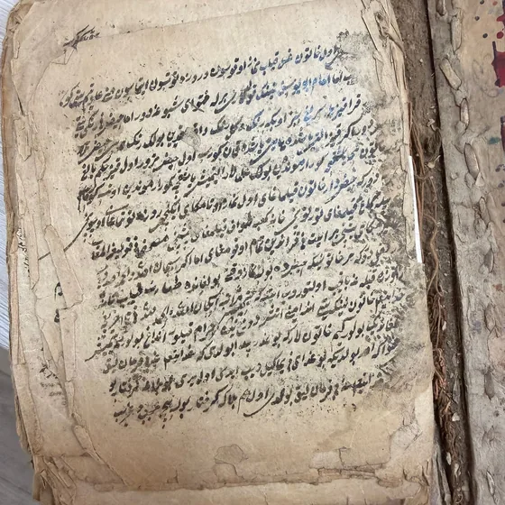
Islamic manuscripts and prints collected from local communities · Osh State University, Kyrgyzstan.
A brief word from Aksana's side of the project, because it points to where this could grow. For a while now, Aksana has been at Osh State University, in southern Kyrgyzstan. Through that connection, we've come to know the university's own holdings: a large collection of Islamic materials gathered from local people — handwritten manuscripts, devotional prints, worn loose-leaf texts. A few are on the screen. Most of this has never been digitised, and much of it is barely catalogued. So one thing we want to explore during the project is whether we can scan these holdings and bring them in as a third collection, alongside the West African and the Eisener materials. It isn't settled yet; it turns on permissions and on how fragile the originals are. But this is exactly the kind of new ground the Open Up funding is meant to make possible, and it's how a teaching relationship becomes a lasting research partnership.
02
The approach
AI-driven digital humanities, built across two regions.
So how do we get from sixteen thousand documents in ten languages to a comparison a researcher can actually run? This is the heart of the talk: one guiding question, and three things we're building to answer it.
How can AI-driven DH methods transform access to and interpretation of these collections — enabling new comparative methods for Islamic discourse across regions?
The project's guiding question.
Here is the question in full. Two verbs in it matter. Access — can we even get into these documents, read the text, search them, find what is there? And interpretation — once inside, can we ask analytical questions that cross the two regions, rather than treating each as a closed case? The phrase to hold onto is "comparative methods for Islamic discourse across regions." The point is not AI for its own sake; it is whether these tools let us pose a genuinely comparative history that the archives, in their raw state, simply do not permit. Three innovations follow.
Innovation 1 / 3
From raw documents to structured data
AI turns scanned, multilingual pages into machine-readable data.
Extracts text from scans — Hausa, Arabic, Cyrillic, Old Tatar
Handles complex layouts that defeat conventional tools
Transcribes audio recordings
Pulls out people, places, dates as structured fields
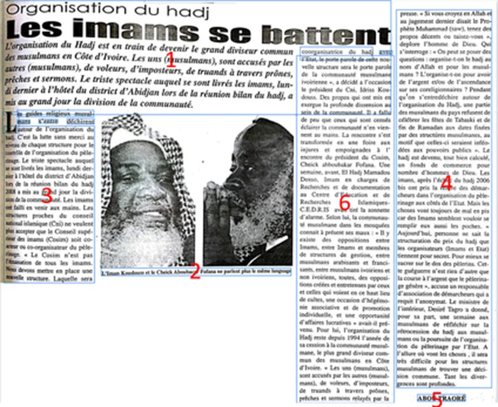
A dense multi-column newspaper page — the kind of layout conventional OCR breaks on.
First innovation: getting the text out. Until recently, optical character recognition broke on exactly this material — non-Latin scripts, historical typefaces, and the dense multi-column layout of a newspaper, like the one on the right. Modern AI models read these far better. They cope with Hausa, Arabic, Cyrillic, even Old Tatar; they follow a complicated page; they transcribe the Hausa audio; and, crucially, they do not just hand back a wall of text — they pull out the entities, the people, places, and dates, as structured fields we can query and link. That single step, from raw scan to structured record, is what turns a box of papers into something a computer can compare.
Innovation 2 / 3
Queried by AI, not surrendered to it
39 of 43 heritage institutions hit by AI-bot traffic spikes (Weinberg, GLAM-E Lab, 2025); Wikimedia: 65% of its costliest traffic is bots. Read it ↗
Not a choice between unrestricted scraping and a locked repository.
The default is extraction — bots crawl GLAMs, ignoring robots.txt
MCP, a middle layer — auditable, institution-controlled; the data stays put
Yékú's paradox · 2026
Un-digitised, an African archive is invisible to AI; digitised, it's exposed to scraping.
Second innovation: a way to ask — but it has to be built carefully, so let me start with why. Today the default way an AI meets a collection is extraction. A 2025 GLAM-E Lab survey found thirty-nine of forty-three heritage institutions hit by AI-bot traffic spikes that ignore robots.txt; Wikimedia reports sixty-five per cent of its costliest traffic is bots, not people. I've seen the same spike on the IWAC myself — thousands of hits a day, out of the US and China. Underfunded institutions and unpaid labour end up subsidising commercial AI: digital colonialism in its newest form. And Yékú names the trap precisely — leave an African archive un-digitised and it is invisible to the models; digitise it and you expose it to scraping, where an incomplete corpus risks becoming the single story. So the real question is not scrape-or-lock. The Model Context Protocol offers a third path: a middle layer in which the collection is queried by an AI without being handed over to it. The data stays on our servers; the institution decides what the model can see. It's concrete, auditable, and ours to control. Let me show you what that looks like.
Live demo · the IWAC MCP server
From a plain question to cited sources
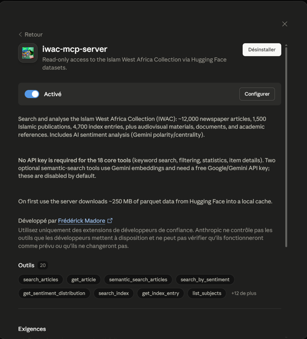
A Claude Desktop extension — read-only, ~22 tools, no API key for the core tools.
One real question — the server runs the method live.
Scopes the collection, then searches it in French
Reads the strongest hits in full
Every claim linked back to its IWAC record
Live for the IWAC (West Africa); the same door onto the Eisener estate is the goal.
Two saved runs below — press ↓
Enough description — let's run it live. This is the IWAC server installed in Claude Desktop: read-only, about twenty-two tools, no API key for the core ones. I'll put one real question to it, in plain language, and let it work: it scopes the collection, searches in French, reads the strongest articles in full, then answers with every claim linked straight back to its record in the archive. One honest caveat before I start: this is live for the Islam West Africa Collection only — West Africa. Extending the same door onto the Eisener estate, so a single question can eventually span both regions, is the goal, not something I've built yet. [Live-demo cue: open Claude Desktop, put the query, show the citations and the links.] If the network misbehaves, I have two saved runs on the next slides — just press down.
Saved run · secularism in Côte d'Ivoire
Brief — the default depth
claude.ai/share/d37cbcb6…
Full chat ↗
Claude Sonnet 4.6 · high effort
Here's one I prepared earlier, in case we need it. I asked, in English, what the collection says about secularism in Côte d'Ivoire. Watch what happens before any searching: the server reads its own method file, then stops to ask how deep I want to go — a quick Brief or a fuller Extended pass, with Brief the default. That pause is the method setting its own terms before it answers, rather than dumping a reply. The full report, every source cited, is one tap away at the top of the frame.
Saved run · Islam in Kpalimé, Togo
Extended — the full method
claude.ai/share/2bdf2009…
Full chat ↗
A five-phase pass — every claim traced to a record, not to the model's memory.
The second saved run goes deeper: Islam in Kpalimé, a small town in Togo. Here I answer "extended", and a five-phase method kicks off — phase one is scoping, before a single keyword. The point is what grounding buys you: every claim traces back to a record in the collection, not to the model's memory. That is the difference between an answer you can check and one you simply have to trust.
Innovation 3 / 3
Equitable, accessible, sustainable
Designed to run anywhere, and to be checked by people.
Open-source models by default; commercial AI only as fallback
Runs locally — no expensive infrastructure
Human-in-the-loop: experts validate before anything enters the database
All code open access — reusable by scholars and archivists anywhere
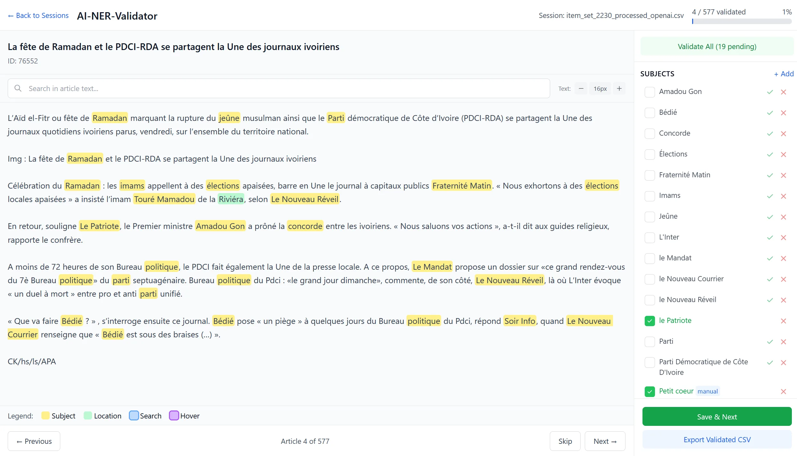
AI-NER-Validator — experts verify AI-extracted keywords before entry.
Third innovation is really a set of principles, because how you build this matters as much as what it does. We use open-source models by default, and reach for a commercial system only where the local one genuinely falls short. It is designed to run locally, without expensive infrastructure — which is what makes it usable in Global South institutions, not only well-funded Northern ones. Nothing the AI produces enters the database unchecked: an expert validates it first. The screenshot shows our review interface, the AI-NER-Validator, where a specialist confirms or corrects the keywords the model extracted before they are committed. And all of the code is open access, written to be reused and adapted by other scholars and archivists. The aim is a method other people can pick up, not a black box only we can run.
Honest about the downside
Embracing and managing risk
Risk Mitigation
AI invents text (hallucination) or modernises historical spelling
Original scans preserved beside every AI output; all models and prompts documented on GitHub
The chatbot approach is largely untested on these collections
Iterative development; we document what works and what does not
Collections are only partially catalogued
AI complements — never replaces — manual cataloguing
AI tools evolve rapidly
Modular architecture; swap components as better tools emerge
We want to be candid about what can go wrong, because the failure modes here are specific. One: these models can hallucinate, or quietly modernise a historical spelling — and unlike old OCR, which produced obvious garbage, a clean wrong answer hides its own error. So we always keep the original scan beside the AI output, and we document every model and prompt publicly on GitHub. Two: nobody has really run this chatbot approach on archives like these, so we treat it as iterative and we write down what fails, not only what works. Three: the collections are only partly catalogued, so the AI complements human cataloguing rather than pretending to replace it. And four: the tools change every few months, so the architecture is modular — we can swap a component out when something better arrives. Managing risk here is not a disclaimer slide; it is built into the design.
Where it leads
Building sustainable networks
A concluding workshop turns the tools into a lasting network.
Scholars from West Africa and Central Asia, in one room
Interdisciplinary: Islamic studies, history, anthropology, DH
Hands-on training for researchers, archivists, heritage professionals
Goal: South–South networks that outlast the project
Where does this end up? Not only as software, but as people who can use it. The project closes with a workshop that brings together scholars from West Africa and Central Asia — the two communities that, as we said at the start, rarely meet — across Islamic studies, history, anthropology, and digital humanities. It is hands-on: researchers, archivists, and heritage professionals are trained on the tools we have built, so the capacity stays in the institutions rather than leaving with us. The goal we care about most is the last one: South–South networks, direct ties between the two regions, that outlast the grant. The infrastructure is the means; the network is the point.
Thank you
Comparing the “peripheries.”
AI-driven DH lets two locked archives speak to each other — and questions the centre they were measured against. islam.zmo.de
Aksana Ismailbekova
Leibniz-Zentrum Moderner Orient (ZMO)
Frédérick Madore
Africa Multiple · University of Bayreuth
To close, back to the word we began with. Calling these regions "peripheries" was always a judgement about where the centre is. Read side by side, with methods that finally make the archives legible, they stop being two margins and become a comparison in their own right — one that asks what the centre was for. We would be glad to take your questions, on the regions, the methods, or the risks. Thank you.